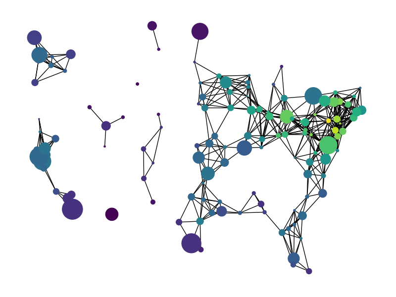

Note
Click here to download the full example code
Knuth Miles#
miles_graph() returns an undirected graph over 128 US cities. The
cities each have location and population data. The edges are labeled with the
distance between the two cities.
This example is described in Section 1.1 of
Donald E. Knuth, “The Stanford GraphBase: A Platform for Combinatorial Computing”, ACM Press, New York, 1993. http://www-cs-faculty.stanford.edu/~knuth/sgb.html
The data file can be found at:
Loaded miles_dat.txt containing 128 cities.
Graph with 128 nodes and 8128 edges
import gzip
import re
# Ignore any warnings related to downloading shpfiles with cartopy
import warnings
warnings.simplefilter("ignore")
import numpy as np
import matplotlib.pyplot as plt
import networkx as nx
def miles_graph():
"""Return the cites example graph in miles_dat.txt
from the Stanford GraphBase.
"""
# open file miles_dat.txt.gz (or miles_dat.txt)
fh = gzip.open("knuth_miles.txt.gz", "r")
G = nx.Graph()
G.position = {}
G.population = {}
cities = []
for line in fh.readlines():
line = line.decode()
if line.startswith("*"): # skip comments
continue
numfind = re.compile(r"^\d+")
if numfind.match(line): # this line is distances
dist = line.split()
for d in dist:
G.add_edge(city, cities[i], weight=int(d))
i = i + 1
else: # this line is a city, position, population
i = 1
(city, coordpop) = line.split("[")
cities.insert(0, city)
(coord, pop) = coordpop.split("]")
(y, x) = coord.split(",")
G.add_node(city)
# assign position - Convert string to lat/long
G.position[city] = (-float(x) / 100, float(y) / 100)
G.population[city] = float(pop) / 1000
return G
G = miles_graph()
print("Loaded miles_dat.txt containing 128 cities.")
print(G)
# make new graph of cites, edge if less then 300 miles between them
H = nx.Graph()
for v in G:
H.add_node(v)
for (u, v, d) in G.edges(data=True):
if d["weight"] < 300:
H.add_edge(u, v)
# draw with matplotlib/pylab
fig = plt.figure(figsize=(8, 6))
# nodes colored by degree sized by population
node_color = [float(H.degree(v)) for v in H]
# Use cartopy to provide a backdrop for the visualization
try:
import cartopy.crs as ccrs
import cartopy.io.shapereader as shpreader
ax = fig.add_axes([0, 0, 1, 1], projection=ccrs.LambertConformal(), frameon=False)
ax.set_extent([-125, -66.5, 20, 50], ccrs.Geodetic())
# Add map of countries & US states as a backdrop
for shapename in ("admin_1_states_provinces_lakes_shp", "admin_0_countries"):
shp = shpreader.natural_earth(
resolution="110m", category="cultural", name=shapename
)
ax.add_geometries(
shpreader.Reader(shp).geometries(),
ccrs.PlateCarree(),
facecolor="none",
edgecolor="k",
)
# NOTE: When using cartopy, use matplotlib directly rather than nx.draw
# to take advantage of the cartopy transforms
ax.scatter(
*np.array([v for v in G.position.values()]).T,
s=[G.population[v] for v in H],
c=node_color,
transform=ccrs.PlateCarree(),
zorder=100 # Ensure nodes lie on top of edges/state lines
)
# Plot edges between the cities
for edge in H.edges():
edge_coords = np.array([G.position[v] for v in edge])
ax.plot(
edge_coords[:, 0],
edge_coords[:, 1],
transform=ccrs.PlateCarree(),
linewidth=0.75,
color="k",
)
except ImportError:
# If cartopy is unavailable, the backdrop for the plot will be blank;
# though you should still be able to discern the general shape of the US
# from graph nodes and edges!
nx.draw(
H,
G.position,
node_size=[G.population[v] for v in H],
node_color=node_color,
with_labels=False,
)
plt.show()
Total running time of the script: ( 0 minutes 0.126 seconds)